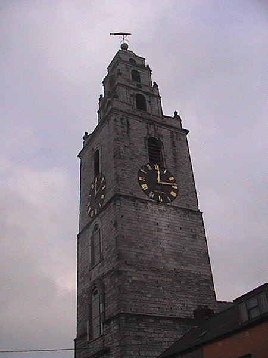

<HTML> <BODY background="http://larkspirit.com/bloodysunday/blue.gif" BGCOLOR =" #99ccff" TEXT =" #000000" LINK =" #006600" VLINK =" #333333">


<CENTER>
<H2> ST. ANNES CATHEDRAL </H2>
</CENTER>
<P ALIGN=CENTER>
<BR><BR>
<p><font face="Arial,Helvetica,Univers" size="3"><p align=right><font size="3" face="arial">Perhaps one of the best known and best loved in Cork the church was built in 1722 as a chapel of ease to St. Mary's, Shandon, which was located nearby in Mallow Lane, now called Shandon Street. It is believed there was a church on this site at least as early as 1199. The church occupies the site of the old Church of St Mary that was destroyed in the siege of Cork in 1690. A temporary church was built at the foot of Shandon Street for some years until the present church was built. Erected by public subscription it is built primarily of local sandstone with limestone dressing. The tower was added until 1750 and the church gained full parochial status in 1772. </font></p>
<BR><p Align=right>St. Anne's in Shandon is known more for its bells than the structure that houses them, due to the famous song "The Bells of Shandon" written by Francis Sylvester Mahony. It is a prominent landmark in the city being sited on top of a hillside overlooking the river Lee. The church was built in 1726 on the site of an earlier church, which had been destroyed during in 1690. Two of the sides of the tower are of limestone and two of sandstone, creating an unusual effect as you walk around the building. The stepped stages on top of the tower, the final stage with a dome, give the church its distinctive appearance. The large weather vane on top is in the form of a gold fish.</font></p> <p><font face="Arial,Helvetica,Univers" size="3"></font></p>


<BR><BR><BR><p><font size="3" face="arial">Some of the more striking features of the church include:</font></p>
<table border="0" cellpadding="5" cellspacing="5" width="50%"><tbody><tr><td width="50%"><a href="http://www.activate.ie/sites/corkcitylib/content/st_annes_tower.htm"><font size="3" face="arial">Tower</font></a></td> <td width="50%"></td> </tr> <tr> <td width="50%"><a href="http://www.activate.ie/sites/corkcitylib/content/st_annes_clock.htm"><font size="3" face="arial">Clock</font></a></td> <td width="50%"></td> </tr> <tr> <td width="50%"><a href="http://www.activate.ie/sites/corkcitylib/content/st_annes_bells.htm"><font size="3" face="arial">Bells</font></a></td> <td width="50%"></td> </tr> </tbody></table> <p><font size="2" face="arial"></font></p>
<p><font size="3" face="arial">Its enduring image is due in no small part to Francis Sylvester O Mahony or </font><a href="http://www.activate.ie/sites/corkcitylib/content/st_annes_fatherprout.htm"><font size="3" face="arial"><u>Father Prout</u> </font></a><font size="3" face="arial">and his song <u> </u></font><a href="http://www.activate.ie/sites/corkcitylib/content/st_annes_fatherprout_bellsofshandon.htm"><font size="3" face="arial">The Bells of Shandon</font></a><font size="3" face="arial"><u> </u>. While the bells may its best-known feature the clocks on each side of the tower and its dominance over the skyline in Shandon are also striking features of the church. </font></p> <p><font size="3" face="arial"></font></p>

<BR>
<DIV ALIGN="LEFT">
<a href="jail.html"></a>

<DIV ALIGN="RiGHT">
<a href="finnbars.html"></a>

<style></style>
</head>
<body></body>
</html>
